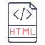
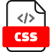
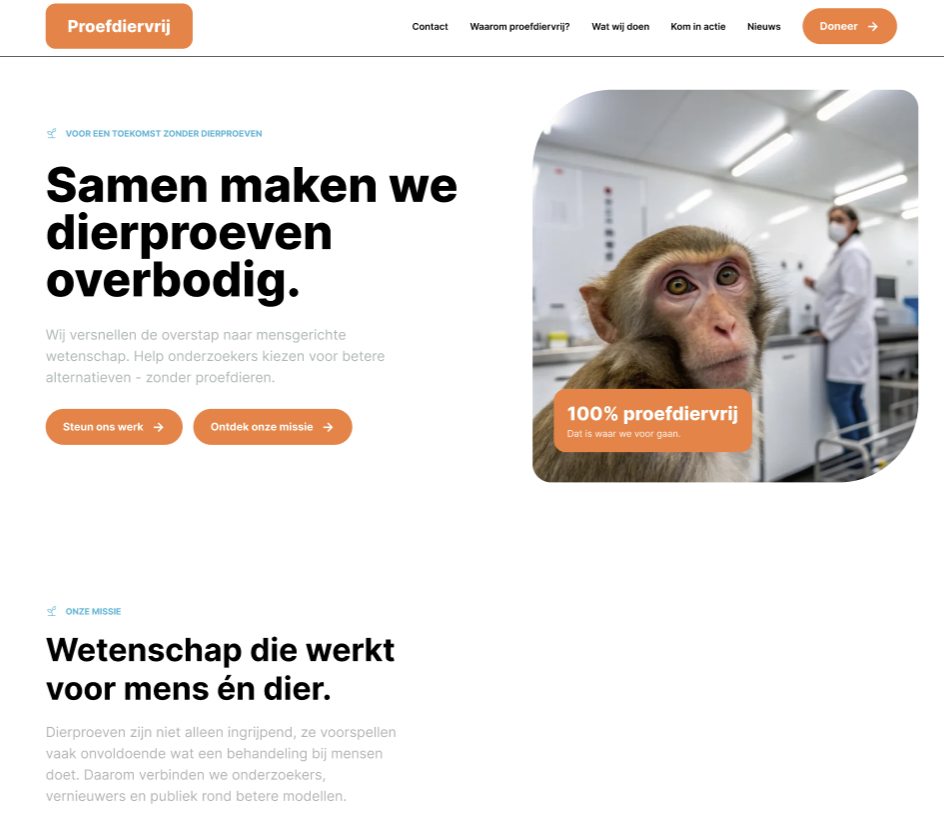

Milan Timman
2026 - 2029

Ik heb met github gewerkt met mijn projecten en heb geleerd dat github al je bestanden en code veilig bewaard.
Ik heb met Figma leren werken met zoals mijn goede doel website en dit portfolio, ik weet hoe de layout werkt.

Met de Html code heb ik meerdere non functionele layouts gemaakt en geprogr- ammeerd met diverse opdrachten en eigen projecten.

Met css heb ik vaardigheden met de styling waardoor mijn websites er altijd mooi eruit zien, ook hiermee ben ik zelf net aan de slag gegaan
Ik heb met Javascript met diverse opdrachten figuren, animaties en variable gemaakt, en kan ik het toepassen aan mijn projecten.
Ik ben Milan en ik doe software developer niveau 4 bij ROC midden nederland in amersfoort. Zelf hou ik er van om met computers te werken en mijzelf te ontwikkelen in dit vak. In deze opleiding leer ik hoe je verschillende soorten websites en applicaties maak.

Bij dit project heb ik html en css leren omgaan zonder interactie en zelf toe te passen in dit project.
Html
Css